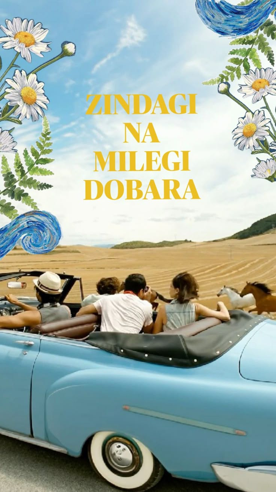
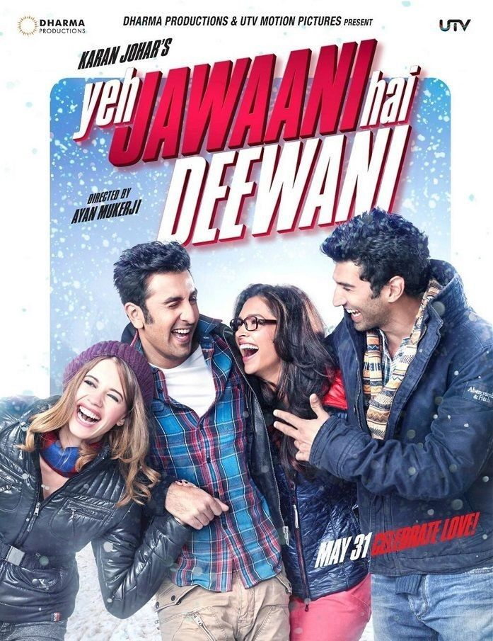

This is one of my fav childhood movies which inspired and educated me about life and its harships. gives reality check in so many ways.

I love how this movie was full of life and drama. It feels very relatable now since we are going through adulting and the characters in the movie were also in a similar phase and how they grew apart for their career but ended up together. shows how real friendship never ends despite of the distance.

Life of Pi is a visually stunning and emotional film that beautifully combines survival, faith, and imagination.The cinematography and visual effects are breathtaking, and the story carries a deep emotional and philosophical meaning. While the pace can feel slow at times, the powerful ending and meaningful themes make it a memorable experience. Overall, it’s an inspiring and thought-provoking movie worth watching.